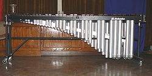

The marimba is a percussion instrument consisting of a set of wooden bars
struck with mallets to produce musical tones. Resonators suspended underneath
the bars amplify their sound.
The bars are arranged like the keys of a piano,
with the groups of 2 and 3 accidentals raised vertically, overlapping the
natural bars to aid the performer both visually and physically. This instrument
is a type of idiophone, but with a more resonant and lower-pitched tessitura
than the xylophone.
The marimba was developed in Central America by African slaves, and descended
from its ancestral balafon instrument, which was also built by African slaves.
Marimba is now the national instrument of Guatemala.
Modern uses of the marimba include solo performances, woodwind and brass
ensembles, marimba concertos, jazz ensembles, marching band (front ensembles),
drum and bugle corps, and orchestral compositions. Contemporary composers have
used the unique sound of the marimba more and more in recent years.
A player of the Marimba can be called a Marimbist or a Marimba Player.

Marimba bars are typically made of either wood or synthetic material. Rosewood
is the most desirable, while Padauk is a popular affordable alternative. Bars
made from synthetic materials generally fall short in sound quality in
comparison to wooden bars, but are less expensive and yield added durability and
weather resistance, making them suitable for outdoor use; marimbas with
wooden bars are usually played inside because the bars are susceptible to pitch
change due to weather.
Bubinga (Guibourtia demeusei) and mahogany have also been
cited as comparable to rosewood in quality for use as marimba bars. The specific
rosewood, Dalbergia stevensonii, only grows in Southern Guatemala and Belize,
formerly the British Honduras, hence its common name.This wood has a Janka
rating of 2200, which is about three times harder than Silver Maple.
The bars
are wider and longer at the lowest pitched notes, and gradually get narrower and
shorter as the notes get higher. During the tuning, wood is taken from the
middle underside of the bar to lower the pitch. Because of this, the bars are
also thinner in the lowest pitch register and thicker in the highest pitch
register.
In Africa, most marimbas are made by local artisans from locally available
materials.
Marimba bars produce their fullest sound when struck just off center, while
striking the bar in the center produces a more articulate tone.
On chromatic
marimbas, the accidentals (black keys) can also be played on the space between
the front edge of the bar and its node (the place where the string goes through
the bar) if necessary. Playing on the node produces a sonically weak tone, and
the technique is only used when the player or composer is looking for a muted
sound from the instrument.
Resonators:
Part of the key to the marimba's rich sound is its resonators. These are tubes
(usually aluminum) that hang below each bar.
In the most traditional versions, various sizes of natural gourds are attached
below the keys to act as resonators; in more sophisticated versions carved
wooden resonators are substituted, allowing for more precise tuning of pitch.
In
Central America and Mexico, a hole is often carved into the bottom of each
resonator and then covered with a delicate membrane taken from the intestine of
a pig to add a characteristic "buzzing" or "rattling" sound known as charleo.In
more contemporary-style marimbas, wood is replaced by PVC tubing. The holes in
the bottoms of the tubes are covered with a thin layer of paper to produce the
buzzing noise.
The length of the resonators varies according to the frequency that the bar
produces. Vibrations from the bars resonate as they pass through the tubes,
which amplify the tone in a manner very similar to the way in which the body of
a guitar or cello would. In instruments exceeding 4½ octaves, the length of
tubing required for the bass notes exceeds the height of the instrument. Some
manufacturers, such as DeMorrow and Malletech, compensate for this by bending
the ends of the tubes. This involves soldering smaller straight sections of
tubes to form "curved" tubes.
Both DeMorrow and Malletech use brass rather than
aluminium. Others, such as Adams and Yamaha, expand the tubes into large
box-shaped bottoms, resulting in the necessary amount of resonating space
without having to extend the tubes. This result is achieved by the custom
manufacturer Marimba One by widening the resonators into an oval shape, with the
lowest ones reaching nearly a foot in width, and doubling the tube up inside the
lowest resonators.
Resonator tuning involves adjusting "stops" in the tubes themselves to
compensate for temperature and humidity conditions in the room where the
instrument is stored.
Some companies offer adjustment in the upper octaves only.
Others do not have any adjustable stops. Still some companies (Malletech and
DeMorrow) offer full range adjustable stops.
On many marimbas, decorative resonators are added to fill the gaps in the
accidental resonator bank. In addition to this, the resonator lengths are
sometimes altered to form a decorative arch, such as in the Musser M-250. This
does not affect the resonant properties, because the end plugs in the resonators
are still placed at their respective lengths.
Mallets:
The mallet shaft is commonly made of wood, usually birch, but may also be rattan
or fiberglass. The most common diameter of the shaft is around 8 mm. Shafts made
of rattan have a certain elasticity to them, while birch has almost no give.
Professionals use both depending on their preferences, whether they are playing
with two mallets or more, and which grip they use if they are using a
four-mallet grip.
Appropriate mallets for the instrument depend on the range. The material at the
end of the shaft is almost always a type of rubber, usually wrapped with yarn.
Softer mallets are used at the lowest notes, and harder mallets are used at the
highest notes.
Mallets that are too hard will damage the instrument, and mallets
that might be appropriate for the upper range could damage the notes in the
lower range (especially on a padouk or rosewood instrument).
On the lower notes,
the bars are larger, and require a heavier mallet to bring out a strong
fundamental. Because of the need to use different hardnesses of mallets, some
players, when playing with four or more mallets, might use graduated mallets to
match the bars that they are playing (softer on the left, harder on the right).
Some mallets, called "two-toned" or "multi-tonal", have a hard core, loosely
wrapped with yarn. These are designed to sound articulate when playing at a loud
dynamic, and broader at the quieter dynamics.